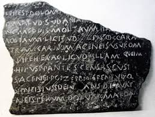
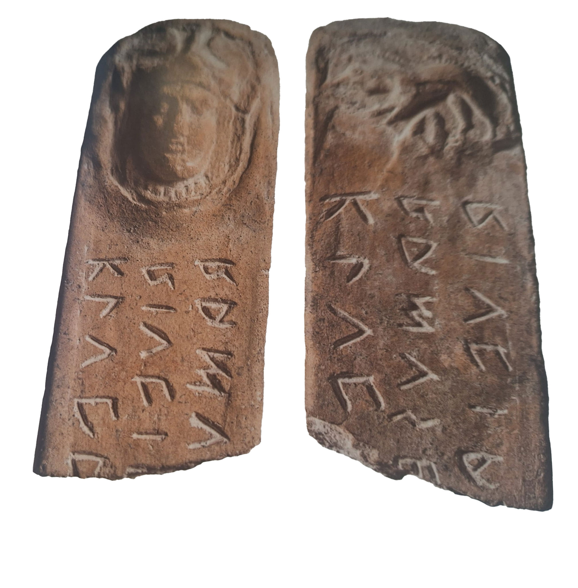
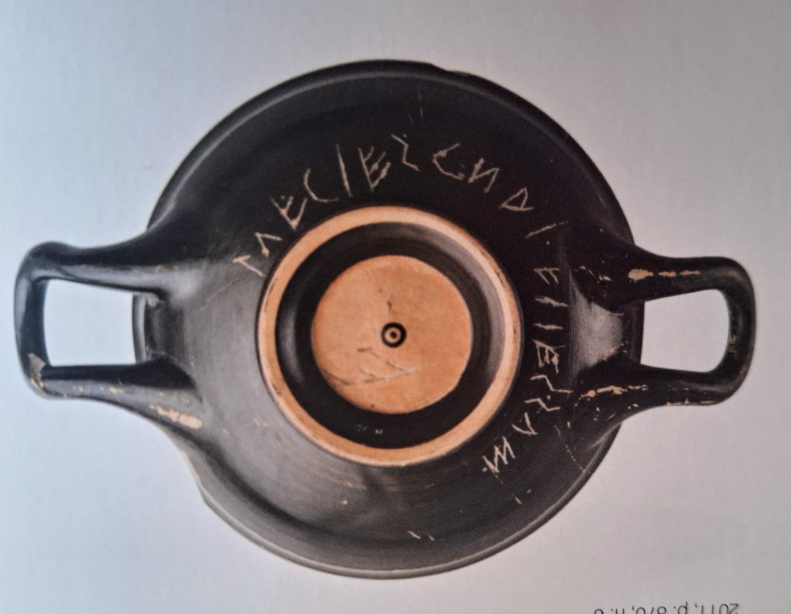
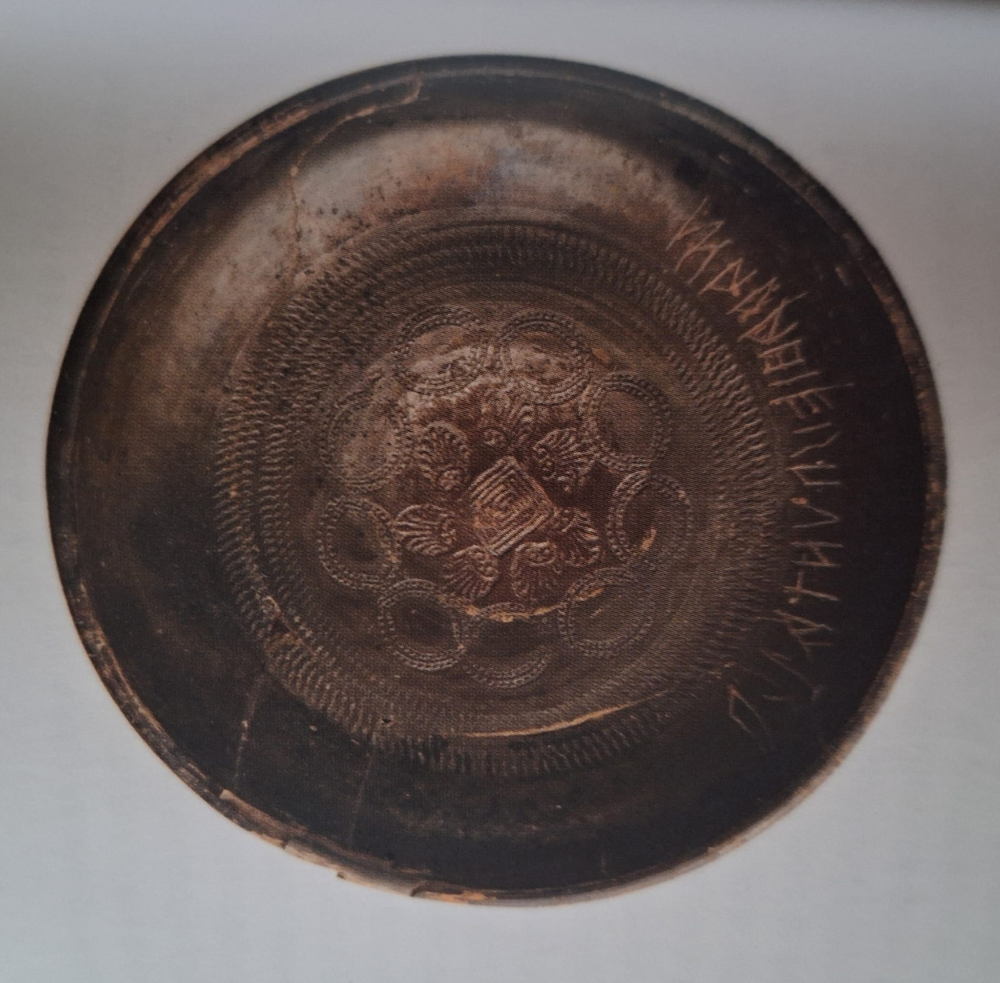
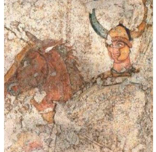

Home |
Le federazioni osche |
Localizzazione musei e siti |
Chi siamo |
Dove trovarci |
Un cospicuo nucleo di iscrizioni in lingua osca appartiene alla Collezione Epigrafica del MANN Museo archeologico di Napoli;
esse provengono da vari insediamenti osci dell’Italia centromeridionale e si datano tra fine VI e inizio I secolo a.C. Tra i principali reperti custoditi presso il MANN si annoverano il già
citato frammento della Tabula Bantina; le Iuvilas dell’area capuana (IV secolo a.C.), le iscrizioni vascolari provenienti da Nola
(metà del V secolo a.C.) e da Saticula, Sant’Agata dei Goti,(fine IV secolo a.C.).
Tra le altre importanti testimonianze della civilta Osco-Sannita è ivi custodita la tomba del Cavaliere dall'elmo cornuto (IV secolo a.C.).
La Tabula Bantina, databile nel trentennio compreso tra il 110 e l’80 a.C., conservata al Museo Archeologico Nazionale di Napoli, è un’iscrizione su lastra di bronzo, in lingua osca, contenente da un lato gli ordinamenti della città osca di Bantia (oggi Banzi in provincia di Potenza) dall’altra una legge risalente alla fine II secolo a.C. E’un importante documento epigrafico per la conoscenza del cursus honorum degli Osci.
|
Tabula Bantina, frammento  |
Appartengono alla collezione epigrafica del Museo Archeologico Nazionale di Napoli le Iuvilas (dal termine presente in molte di esse) che rappresentano un gruppo di iscrizioni recanti indicazioni di festività o cerimonie in cui era richiesta la presenza di un magistrato.
|
Iuvilas (IV Secolo a.C.) |
Si evidenziano, all'interno della collezione epigrafica del Museo Archeologico di Napoli, Kylix a vernice nera proveniente da Nola con l'indicazione del nome del proprietario, un membro della celebre famiglia campana dei Naevii, e la coppa a vernice nera "capuana" con stampigliature all'interno, da Saticula (odierna Sant'Agata dei Goti) anch'essa recante il nome del proprietario.
|
Kylix da Nola (V Secolo a.C.) |
Coppa a vernice nera "Capuana" da Saticula (IV Secolo a.C.) |
La tomba fu rinvenuta a Nola il 7 ottobre 1977, durante i lavori di scavo per una fognatura destinata
a servire il nuovo complesso di edifici nei pressi della strada per Casamarciano.
Su uno dei lati brevi della tomba è dipinta la bellissima testa del cavaliere, giovane, imberbe, dallo sguardo un pò malinconico. Si tratta del defunto eroizzato:
le sue armi, le ferite del suo cavallo testimoniano il suo valore di cavaliere che ha vissuto il proprio ruolo secondo l’etica del ceto sociale di appartenenza.
|
Eroe Guerriero con elmo Cornuto (IV Secolo a.C.) |